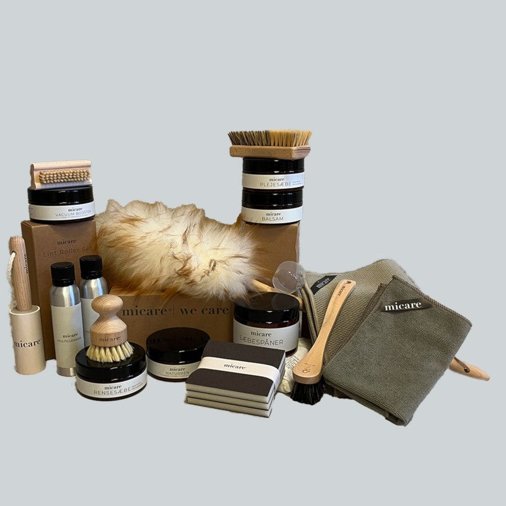
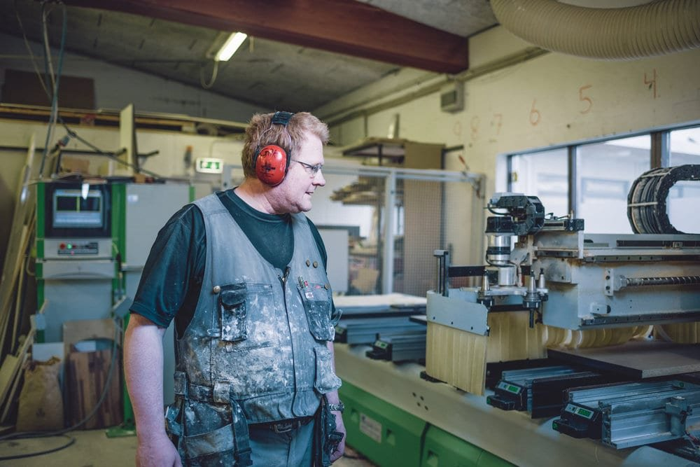

Byrjum á hugmyndinni og þeim upplýsingum sem þú hefur. Efnisval, endanleg mál og umfang eru síðan yfirfarin með Fanntófelli.
01
Segðu frá verkinu
Veldu vöruflokk og efni. Gróf mál, mynd eða skissa hjálpa til við að útskýra verkefnið.
02
Förum yfir saman
Fanntófell yfirfer útfærslu og forsendur áður en tilboð og endanleg pöntun eru staðfest.
03
Frágangur eftir samkomulagi
Ræðum afhendingu og hvort óskað sé eftir uppsetningarþjónustu.

Micare umhirðuvörur fást hjá Fanntófelli. Rétt þrif og viðhald hjálpa yfirborðinu að njóta sín lengur. Skoða umhirðu ↗
Verkstæðið

Borðplötur síðan 1987.
Fanntófell var stofnað í Reykholti í Borgarfirði 1987 og hefur sérhæft sig í smíði á borðplötum frá upphafi. Í dag er verkstæðið og starfsstöðin á Gylfaflöt 6-8 í Reykjavík.
Stofnað
1987
Starfsemi
Framleiðsla á húsgögnum og innréttingum í eldhús
Fyrir hverja
Heimili, hönnuði og verktaka
Staðsetning
Gylfaflöt 6-8, 112 Reykjavík
Einstaklingar og verktakar. Fanntófell smíðar jafnt fyrir heimili og verktaka. Lítil endurnýjun eða stærra verkefni? Byrjum á því sem þú þarft.
Fyrirspurn
Byrjum á þinni hugmynd.
Þú þarft ekki að vera með allt á hreinu. Safnaðu því sem þú veist og sjáðu hvernig fyrirspurnin gæti litið út.
↳ Prófaðu hugmyndina. Þetta er sýniform; ekkert er sent eða vistað hjá Fanntófelli.
Sýnidæmi tilbúið
Hugmyndin er komin á blað.
Ekkert hefur verið sent. Svona gæti viðskiptavinur safnað upplýsingum fyrir Fanntófell án þess að prenta og skanna verkbeiðni.
Niðurhalið inniheldur samantekt og skráarheiti, ekki viðhengin sjálf. Í fullbúinni lausn færi þetta saman til starfsfólks.